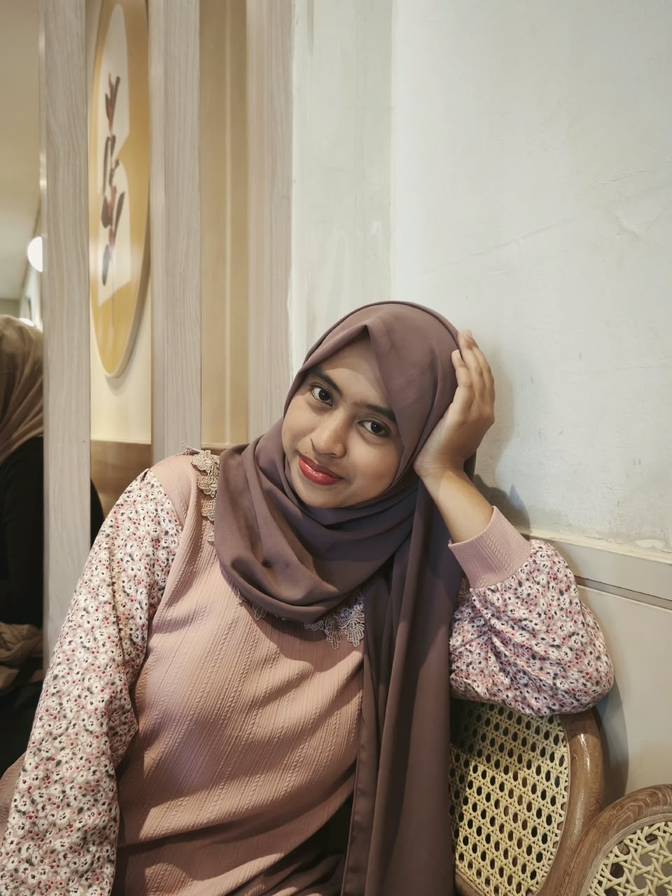
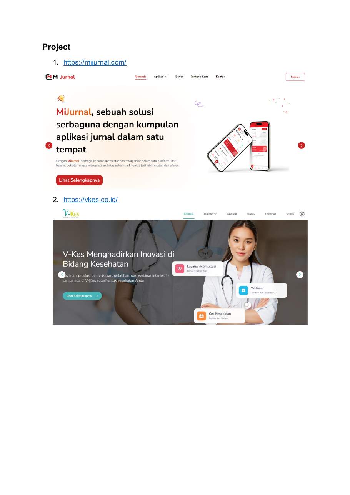
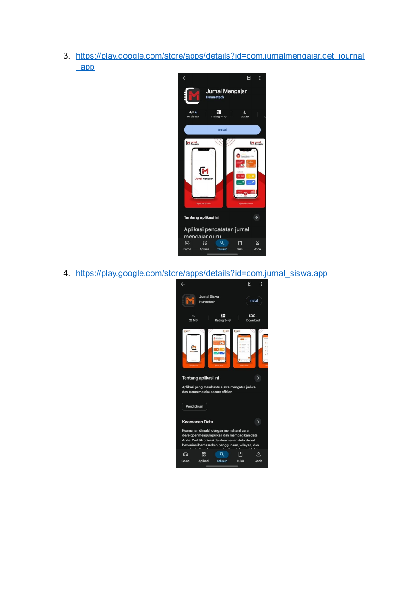

PT Humma Technology Indonesia
Backend Developer · Wakil Ketua Magang
Terlibat dalam proyek MiJurnal dan VKes selama program magang, sekaligus menjalankan tanggung jawab sebagai Wakil Ketua Magang.
Halo, saya
Saya tertarik membangun solusi digital melalui pengembangan web, backend, dan desain UI/UX. Senang belajar, berkolaborasi, serta mengubah ide menjadi produk yang bermanfaat.

Curious by nature.
Creative in execution.
Fokus utama
Web · Backend · UI/UX
01 / Tentang saya
Saya adalah mahasiswa Sistem Informasi yang aktif dan memiliki pengalaman mengikuti kompetisi bidang desain UI dan teknologi. Saya percaya diri berbicara di depan umum, terbiasa bekerja secara terstruktur dan teliti, serta mampu bekerja secara individu maupun tim.
Berbagai kegiatan, presentasi, lomba, dan pengalaman organisasi membantu saya mengembangkan kemampuan komunikasi, kepemimpinan, serta kolaborasi dalam situasi formal maupun informal.
04+
Proyek digital
02+
Pengalaman kompetisi
2026
Universitas Negeri Surabaya
02 / Kemampuan
Perpaduan kemampuan teknis dan interpersonal untuk mendukung proses pengembangan produk.
Membangun website dan pengalaman digital.
Mengembangkan logika dan layanan sisi server.
Merancang tampilan dan alur interaksi pengguna.
Presentasi dan komunikasi di depan umum.
Mengkoordinasikan tim dan mengambil peran.
Menyampaikan materi dan mendampingi proses belajar.
03 / Pengalaman
Backend Developer · Wakil Ketua Magang
Terlibat dalam proyek MiJurnal dan VKes selama program magang, sekaligus menjalankan tanggung jawab sebagai Wakil Ketua Magang.
Kompetisi teknologi · 2025
Pengembangan dan pengelolaan website sekolah, termasuk perancangan wireframe, mockup, prototype, serta pemanfaatan teknologi cloud.
Juara Harapan 1 · 2024
Merancang aplikasi pelacakan bus secara real-time dan pengelolaan jadwal bus di Bojonegoro yang selalu diperbarui.
Membangun Jejaring dan Aksi Nyata
Mengikuti kegiatan membangun jejaring, menjalankan tantangan, dan membiasakan kebiasaan positif.
04 / Proyek pilihan


Aplikasi pencatatan jurnal guru dan tugas siswa yang terintegrasi dengan guru serta sekolah.
SCHOOL WEBSITE / COMPLAINT SYSTEM
Website resmi sekolah yang berisi informasi terkait sekolah, serta Laporku! sebagai website pengaduan kerusakan sarana dan prasarana sekolah.
Kunjungi website ↗05 / Arsip pencapaian
Dokumentasi sertifikat ditampilkan dari arsip portofolio yang diberikan.
06 / Pendidikan
2014 — 2020
2020 — 2023
2023 — 2026
2026 — Sekarang
Sistem Informasi
07 / Kontak
Terbuka untuk bertukar ide, belajar hal baru, dan kesempatan kolaborasi.